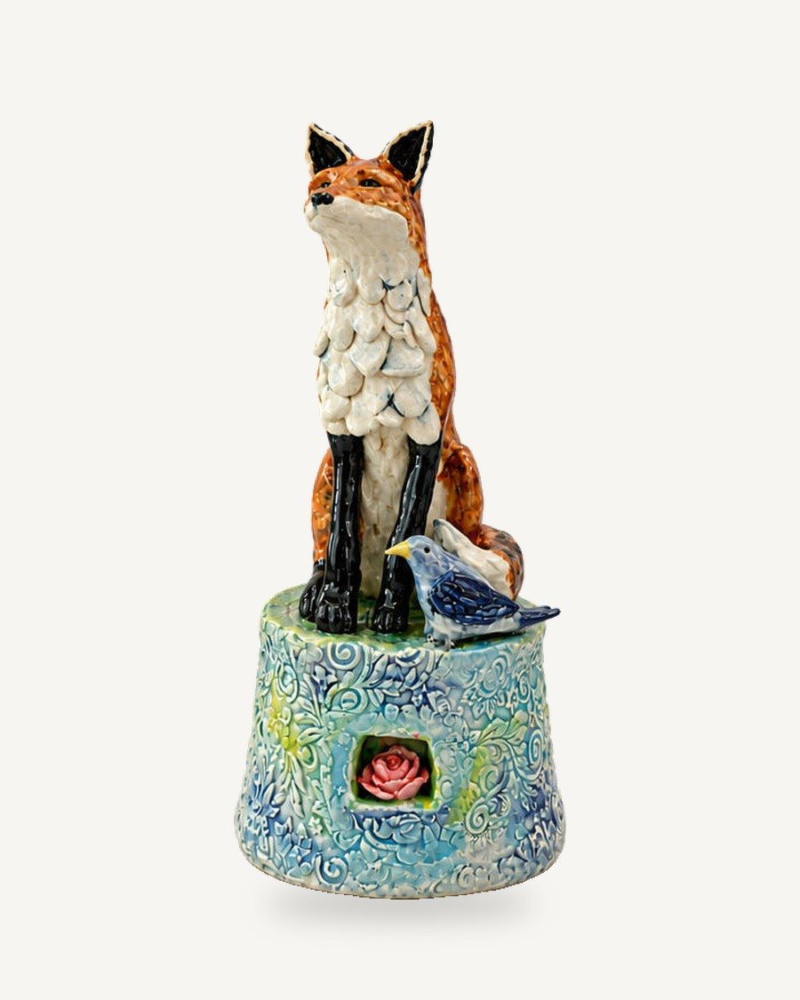
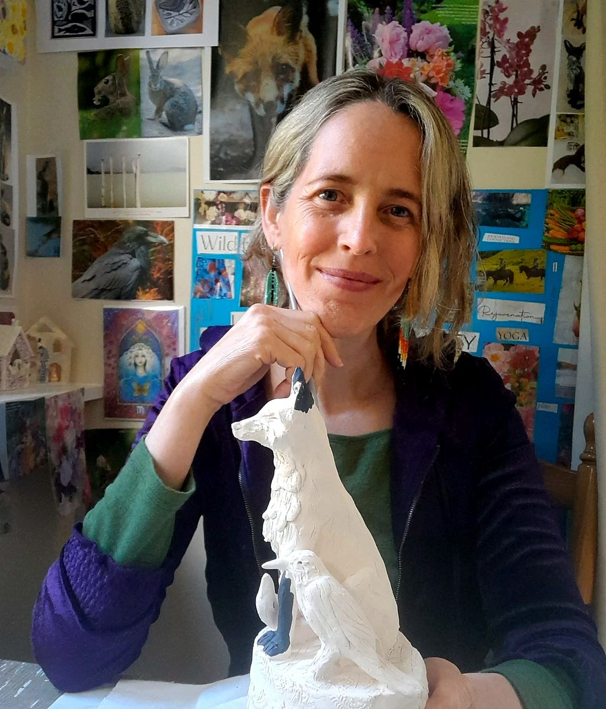
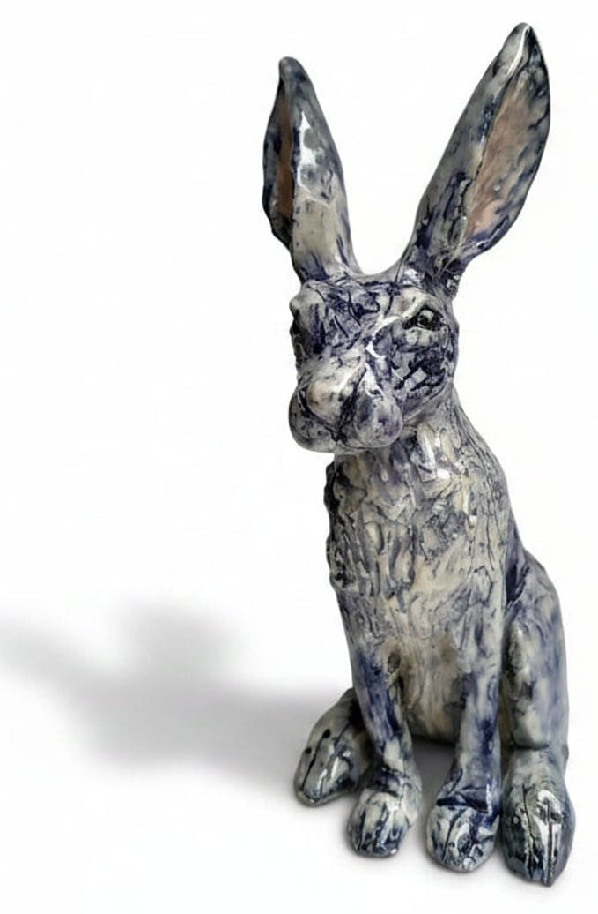
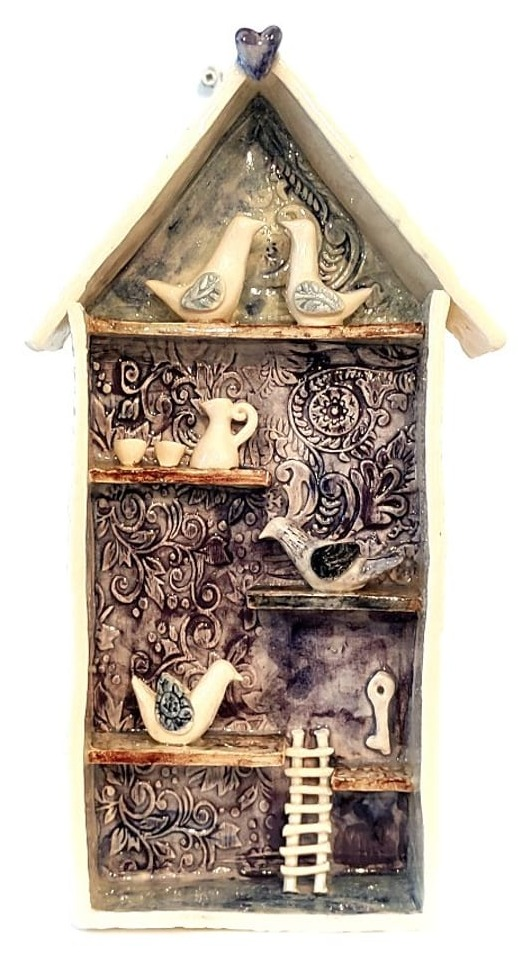
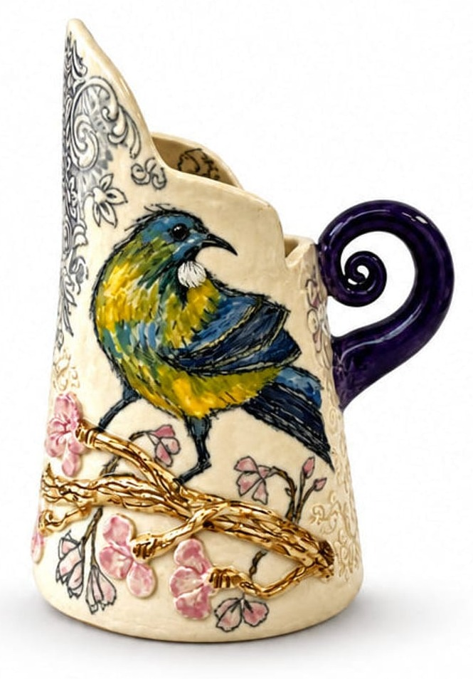
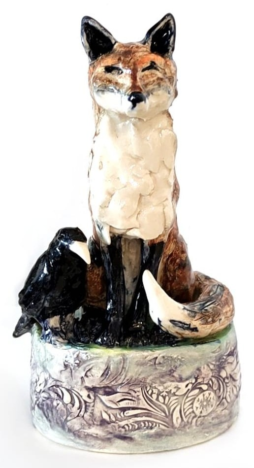
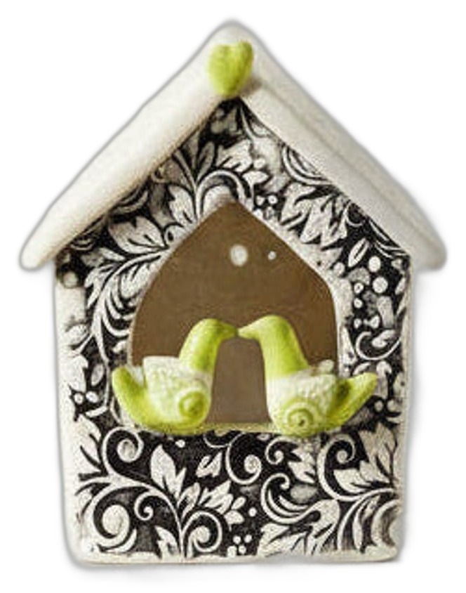
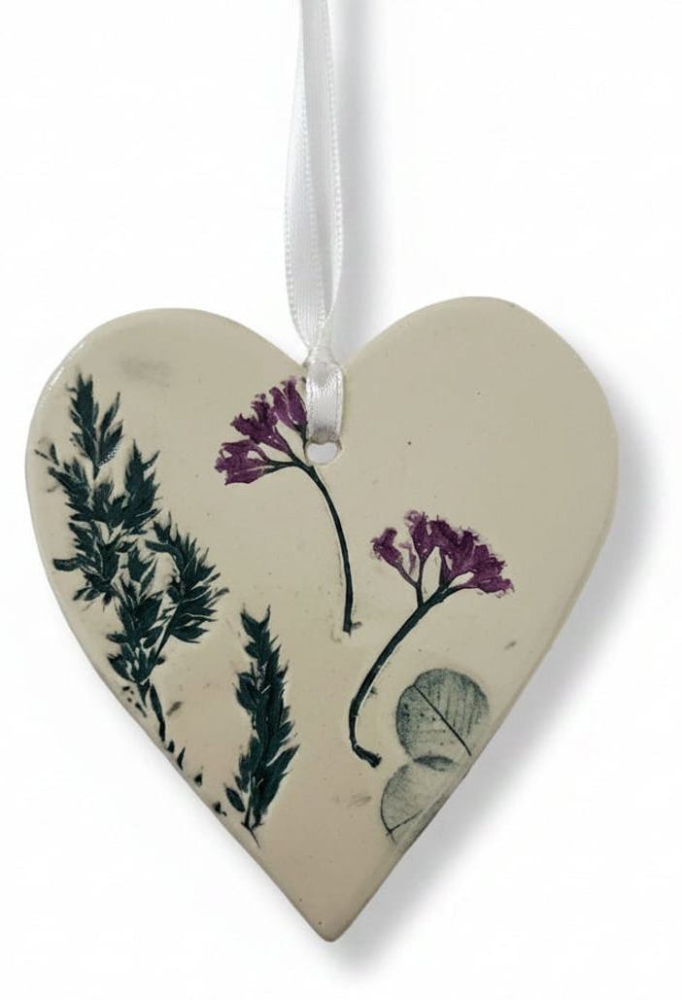

Maker's introduction
Cate Pates makes one-of-a-kind earthenware pieces: foxes, hares, owls and ravens, houses made to hang on the wall, and vessels decorated with her own drawings and poetry.
Born in England, Cate trained in ceramics at Cardiff University (BA Hons) and has worked with clay for more than 30 years. She is a three-time Portage Ceramic Awards finalist, has taught on Otago Polytechnic's Diploma of Ceramic Arts, and has exhibited in New Zealand, Australia and the UK.
"I like to sculpt animals which have some magical and mystical energy to them."
Made by hand
Vessels are slab-built and every creature is modelled piece by piece, so no two are the same.
Her own glazes
Cate mixes her own glazes and fires multiple times to 1100°C.
Drawn on
She draws directly onto the bisqued clay with ceramic pencils, inspired by the forest she walks in most days.
In Cate's words
"I love what I do. As a child I used to make creatures out of fimo, bake them and spend hours making stories with them. I also loved to draw, especially animals. I love to create with my hands, and the way I can create something magical out of what is essentially a piece of mud is delightful to me."
"My figurative work references myths, ancient legends, the faery realm… what happens in the forest when nobody is there? Foxes, hares, owls and ravens hold spiritual significance for me."
Cate runs her own studio, Fig Tree Studio, in Lower Hutt, where as well as making her own work she runs boutique clay classes.

Selected work






The range
Where it's shown now
Recognition
Curriculum vitae